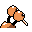

#084
Doduo
Normal
A bird that makes up for its poor flying with its fast foot speed. Leaves giant footprints
Base stats Total 275
HP35
Attack85
Defense45
Speed75
Special35
Details
- Species
- Twin Bird
- Height
- 4'07"
- Weight
- 86.0 lb
- Catch rate
- 190
- Base exp
- 96
- Growth
- Medium Fast
Level-up moves
LevelMoveType
StartPeck
Lv 6GrowlNormal
Lv 7LeerNormal
Lv 9Fury AttackNormal
Lv 20RageNormal
Lv 22Wing Attack
Lv 31Body SlamNormal
Lv 33Drill Peck
Lv 44Double-EdgeNormal
Lv 46Sky Attack
TM / HM
TM03 Swords DanceTM06 ToxicTM08 Body SlamTM09 Take DownTM10 Double-EdgeTM20 Pay DayTM31 MimicTM32 Double TeamTM33 ReflectTM34 BideTM39 SwiftTM43 Sky AttackTM44 RestTM49 Tri AttackTM50 SubstituteHM02 Fly